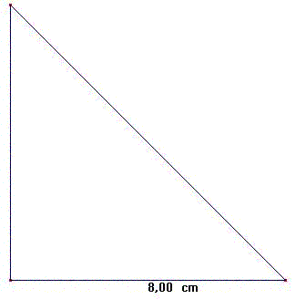
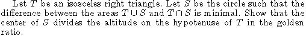

Problema 81
| Sea T un triángulo rectángulo isósceles. Sea S el círculo tal que la diferencia entre las areas de T unión con S y de T intersección con S es mínima. Demostrar que el centro de S divide a la altura sobre la hipotenusa de T en el número de oro. |
Para fijar datos, el triángulo puede ser:

Jordi Dou (1980): American Mathematical Monthly, Vol. 87, No. 7, Aug. - Sep.,(pag 577)

(texto en inglés)